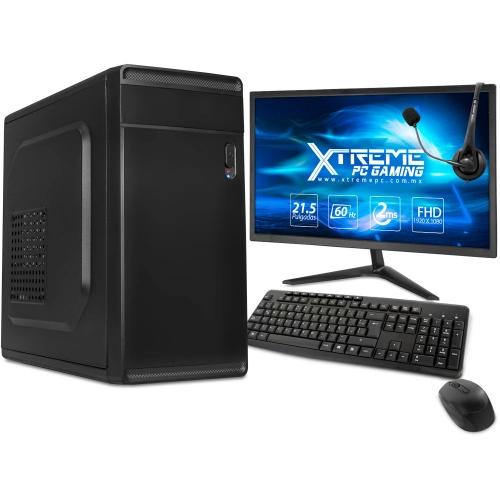
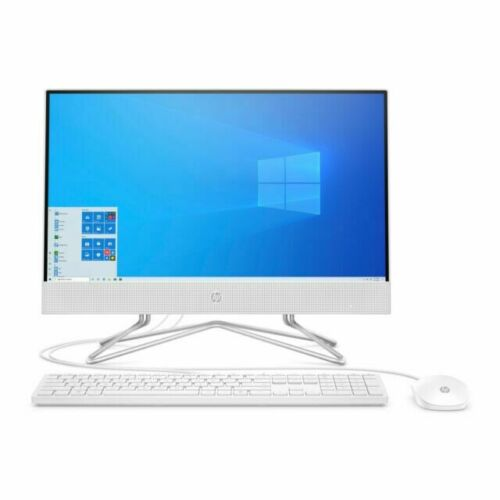

Computadoras de escritorio (PC): son equipos domésticos o profesionales que requieren de una ubicación fija, estos tienen la ventaja del bajo costo a comparación de otros tipo de computadores, son fáciles y baratos a la hora de renovar los componentes, tienen una buena potencia y refrigeración y una de las desventajas es que no son portátiles y necesitan de una pantalla o monitor lo cual significa un costo extra.

Laptop: este tipo de aparatos tienen piezas físicamente ligeras, diseñadas para su uso en exteriores o para viajar Aunque poseen menos potencia que los PC, lo compensan en practicidad y movilidad, igual tienen la desventaja que no se pueden renovar o cambiar componentes como la tarjeta de video.
All in one: este tipo de equipos son usados generalmente para trabajo ya que tienen una gran pantalla la que contiene todos los componentes, estos tienen la ventaja que al no contar con un gabinete usan poco espacio, tienen una estética muy mínimalista lo cual puede resultar atractivo para algunos usuarios y una pantalla de buena calidad, esto en la mayoría de los casos. unas de las desventajas que tiene es el alto precio a comparación de los componentes de estos, la dificultad para actualizar el computador ya que estos tienen un circuito cerrado, no son portátiles, se suelen sobrecalentar debido a la poca refrigeración y espacio que tienen estos equipos para los componentes.
